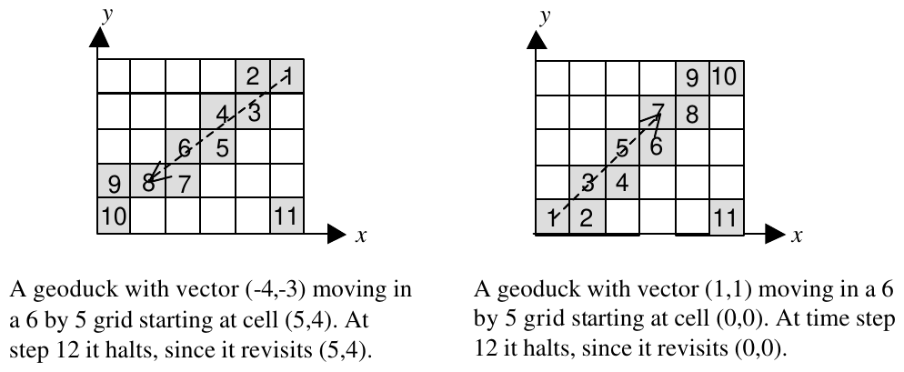

25th Annual ACM ICPC World Finals · Problem E
Researchers at the Association for Computational Marinelife in Vancouver have been working for several years to harness various forms of aquatic life with the goal of constructing an underwater computer that can be seen from outer space. The current research focus is a breed of clam known as the geoduck (pronounced “GOOEY duck”), scientific name Panope abrupta. Geoducks can be as heavy as ten pounds and as long as 1 meter with their siphons or “necks” fully extended. Because of their life expectancy (up to 150 years), they seem to be good agents for manipulating a large-scale oceanic graphical user interface—hence, the “geoduck GUI” project.
Current research examines pairs of trained geoducks each starting in a distinct corner of a rectangular grid. They crawl across the grid spreading luminescent chemicals from containers attached to their shells. Geoducks are trained to move one grid unit horizontally or vertically per time unit to approximate a direction vector (each geoduck has a unique vector). If a move takes a geoduck off the edge of the grid, a trained dolphin immediately transports it to the cell on the opposite edge of the grid, effectively providing a “wraparound” mechanism. The entry point in the opposite edge cell is horizontally or vertically aligned with the exit point of the cell departed and the geoduck trajectory is maintained. Geoduck moves are synchronized; however, a geoduck halts when it enters a cell that it has previously visited. If two geoducks move into the same cell at the same time, they halt in that cell. If two geoducks attempt to move into each other’s cells at the same time, then they halt. A geoduck is initially placed at a grid corner so that its direction vector points “in” to the grid (e.g., if the x-component is positive and the y-component is negative, the starting position is at the minimum x-value and the maximum y-value in the grid).
Both geoducks begin at time t=1 in their respective (distinct) starting corners. A geoduck follows its vector as if the vector starting point were anchored to the center of geoduck’s initial cell position in the grid. It always moves to the next cell that is divided into regions by the vector (or its extension), with one exception. If the vector passes through a corner of the grid, the geoduck moves horizontally and then vertically to reach the next cell divided by the vector. Figure 1 shows several geoduck paths. The numbers in the cells indicate elapsed time. Grid cells are numbered from the lower left starting at zero in both the x and y directions. If the two geoducks in Figure 1 start at the same time in the same 6 by 5 grid, they each halt after 5 time units with a total of 10 cells illuminated.

You must write a program to select pairs of geoducks that illuminate the maximum number of grid cells on the screen in the least amount of time. Repeat your calculations for various grid sizes and comb inations of geoducks.
Input consists of a sequence of test cases each beginning with a line containing two integers m and n, 1 = m,n = 50, where m and n are not both 1. These are x and y dimensions of the grid. The second line of each test case contains an integer k, 2 = k = 10, representing the number of geoducks. At least one pair of geoducks will have distinct starting points. The next k lines each contain a pair of non-zero integers representing the x and y components of the k geoduck direction vectors.
The final test case is followed by two zeros.
For each test case, print the test case number, the maximum number of illuminated cells, the minimum number of time units required to illuminate that number of cells, and the sequence numbers of each pair of geoducks that achieve these values. Print all pairs of geoducks that achieve maximum illumination in minimum time. The order of printing does not matter; however, do not print any pair twice for the same test case. Imitate the sample output shown below.
6 5 3 -4 –3 1 1 1 -1 0 0
Case 1 Cells Illuminated: 10 Minimum Time: 5 Geoduck IDs: 1 2 Geoduck IDs: 1 3